Big Orange Crayonmusical thingsJuno, The Ivory Coast, and Ted Leo/Pharmacists The Middle East, Cambridge, MA 8/31/01 There's not much of a point in reviewing a show a month after it happened, so I'll skip that part, other than to say that it was really, really amazing... maybe that comes off in the pictures, maybe not... Here are the pictures that caused the long delay: Juno 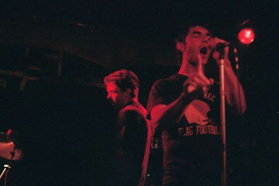 It was kind of dim while Juno was playing (it was still pretty hot from the day and the lights wouldn't have been nice) so I couldn't take many pictures of them (at least many that aren't red and grainy) The Ivory Coast 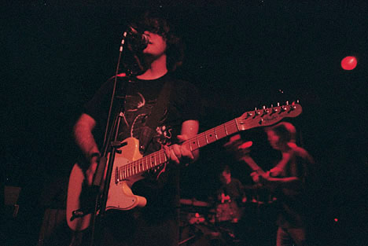 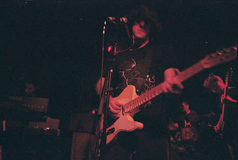 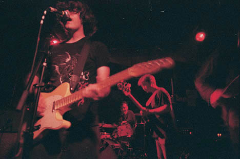 Jodi Buonanno with the Ivory Coast 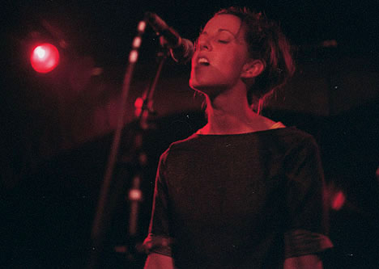 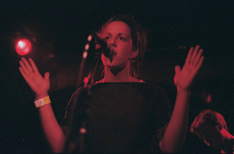 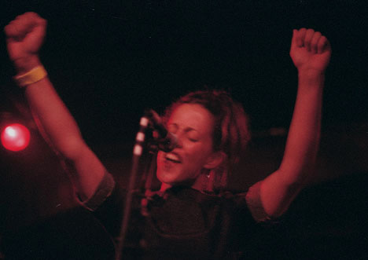 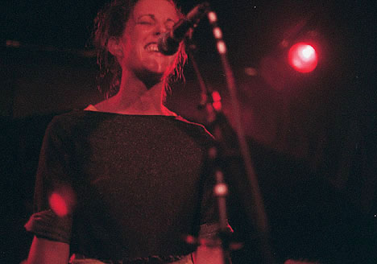 Ted Leo/Pharmacists 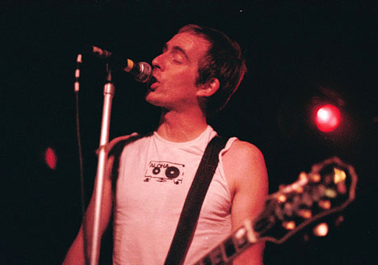 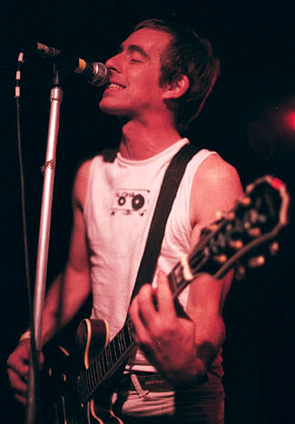 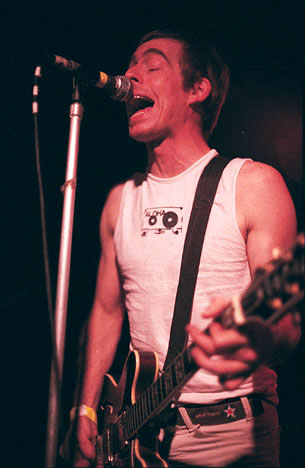 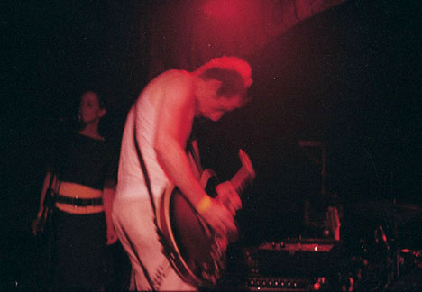 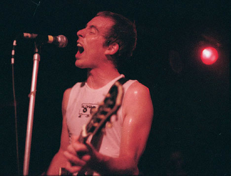 |